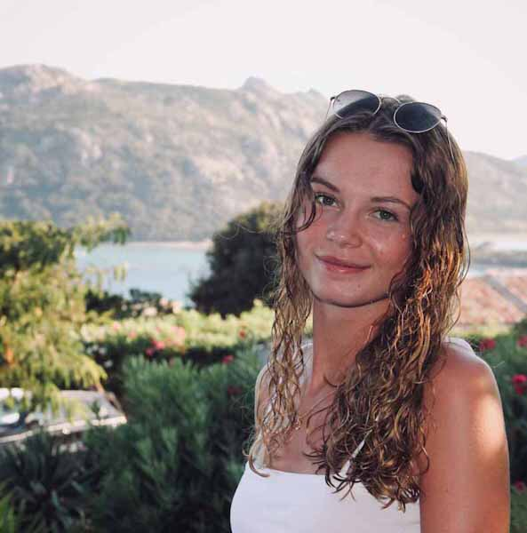
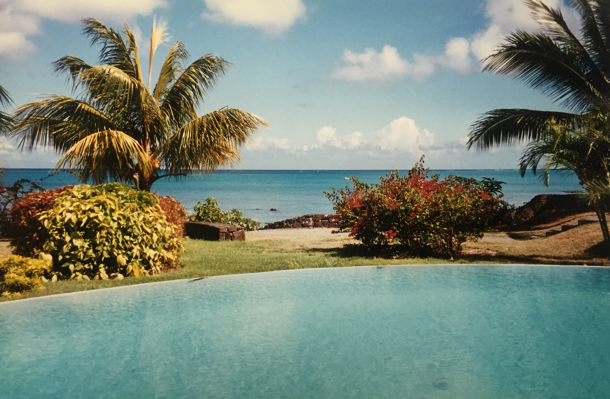
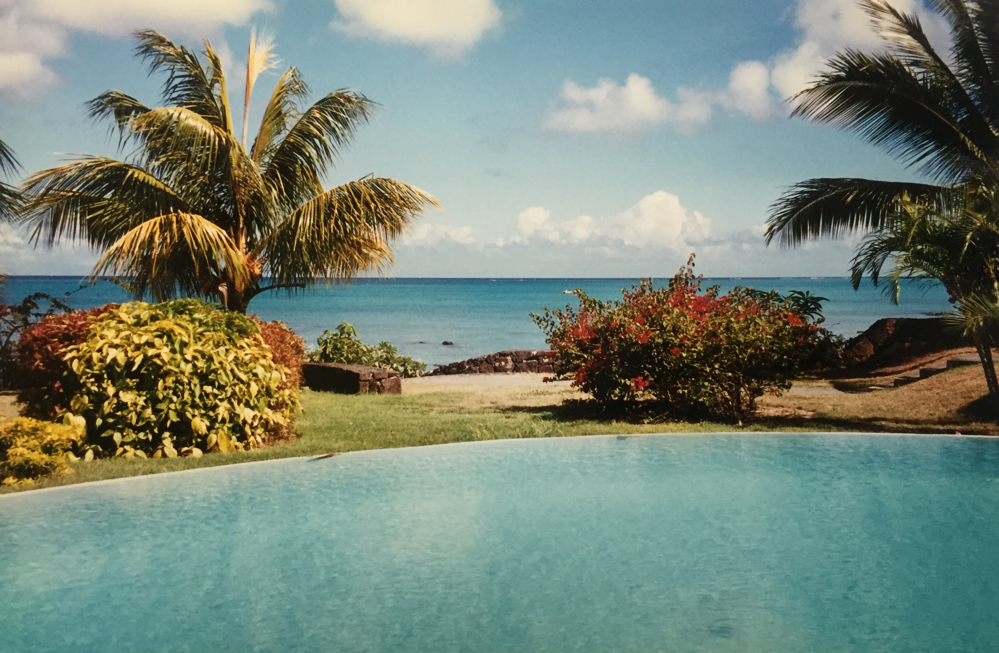

Salut, bienvenue sur le profil d'Odeline
Étudiante en 1ére année d'école de commerce. Sportive, volontaire et attentionée, je consacre mon temps libre au sport, aux voyages, à ma vie sociale et à l'entraide.
ÉTUDES
Après l'obtention d'un baccalauréat série S, je me suis dirigée vers l'Ecole de Management Léonard de Vinci (EMLV) située dans le quartier d'affaires, à la Défense
Découvrir EMLVSPORT
Gymnastique Rythmique
BÉNÉVOLAT
VOYAGES
 


Goût pour les voyages à travers le monde et la découverte de nouvelles cultures...